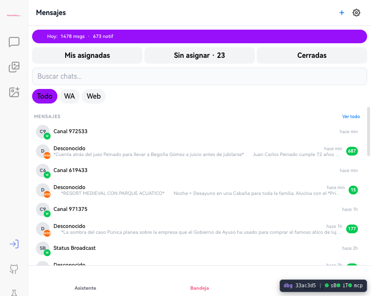

QA Maestro v4 · Ronda 1
Fecha: 2026-08-07 · Alcance real ejecutado: bloques A, B, D, E, G y una verificación rápida de M.
Veredicto
Resultado global: RECHAZADO.
La sesión en chat-dev es incoherente entre rutas. /asistente puede abrir con navbar autenticada y saldo visible, pero /settings, /bandeja, /agentes y /files muestran CTA de login o avatar Visitante; aun así, /bandeja expone conversaciones e historial reales. Además, el primer envío en el chat dispara persistencia con HTTP 422, en línea con el bloqueo conocido de api-ia.
Resumen
Matriz de casos
| Caso | Resultado | Observación | Evidencia |
|---|---|---|---|
A-09 Login fiable en /asistente |
PASS | Pestaña nueva de /asistente carga con navbar completa, saldo €84.71 y accesos laterales visibles. |
Snapshot de /asistente con Web de Boda, Discover, Conocimiento, Bandeja, Pendientes, Archivos y saldo. |
A-10 Consistencia por ruta |
FAIL | En el mismo dominio y misma ronda, /settings, /bandeja, /agentes y /files muestran CTA Iniciar sesión o avatar Visitante, mientras /asistente aparece autenticado. |
Snapshots de /settings, /bandeja, /agentes y /files. |
B-01 Primer envío en chat |
BLOCKED(api-ia) | El composer acepta texto y dispara requests reales, pero la persistencia devuelve HTTP 422. No se observó respuesta estable visible tras la espera. |
Console y network con POST /api/backend/chat/messages, POST /webapi/chat/openai y error [message/apiIa] POST /chat/messages → HTTP 422. |
B-02 Persistencia 2º/3º mensaje |
BLOCKED(api-ia) | Queda bloqueado por el mismo fallo de persistencia del primer envío. | Misma traza del bloque B. |
D-01 Carga de bandeja |
PASS | /bandeja carga lista, filtros y contadores visibles. |
Snapshot con botones Mis asignadas, Sin asignar · 23, WA, Web. |
D-09 Abrir conversación |
FAIL | Se abre una conversación concreta y se muestran mensajes reales, pero el perfil sigue marcando Visitante. |
Navegación a /bandeja/wa-.../conv_... con texto real del hilo e imagen de perfil Visitante · Bodas de Hoy. |
D-10 Historial en conversación |
FAIL | El hilo renderiza historial real y dispara GET /api/messages/whatsapp/conversations/... pese a que la UI sigue degradada a visitante. |
Network con múltiples GET a conversaciones concretas y snapshot del hilo. |
E-01 /agentes carga real |
FAIL | La ruta no presenta lista funcional de agentes; termina degradada con CTA de login. | Snapshot de /agentes sin lista ni ficha, con Iniciar sesión. |
G-01 /files hereda sesión |
FAIL | En la misma ronda donde /asistente está autenticado, /files cae al muro de registro. |
Snapshot de /files con Crear cuenta gratis e Iniciar sesion. |
M-01 /mesas carga |
PASS | app-dev/mesas abre sin tocar datos y muestra toolbar principal. |
Snapshot con Compartir buscador de mesa, invitados, planos, mesas, mobiliario, resumen y ＋ Añadir mesa. |
| Estabilidad de pestañas antiguas | PASS con reserva | Dos pestañas antiguas de chat-dev estaban en 502 Bad gateway, pero abrir pestañas nuevas recuperó rutas funcionales. Se documenta como contexto de estabilidad/caché, no como caso formal nuevo de esta ronda. |
Snapshots previos de /asistente y /settings en 502. |
Hallazgo crítico
Fuga funcional en bandeja con identidad degradada
Severidad: crítica. La pantalla de /bandeja muestra una identidad visual de visitante, pero permite ver lista de conversaciones y abrir un hilo concreto con contenido real. Esto rompe la expectativa mínima de autenticación coherente y puede convertirse en fuga de datos cross-user si la condición no está estrictamente ligada a la misma sesión.

Consola y red
Bloque B · chat
Console: [error] [persistencia] no se pudo guardar el mensaje; se responde en local: Error: [message/apiIa] POST /chat/messages → HTTP 422 Network: POST /api/backend/chat/topics POST /api/backend/chat/messages POST /api/backend/chat/messages PATCH /api/backend/chat/sessions/inbox POST /webapi/chat/openai PATCH /api/backend/chat/messages/tmp_hG7NLPhB
Bloque D · bandeja
Network: GET /api/messages/whatsapp/conversations/6a63708eec088039cc45e45f?limit=50&page=1 GET /api/messages/whatsapp/conversations/6a645452a37f4070cb533ee5?limit=50&page=1 GET /api/messages/whatsapp/conversations/6a645454a37f4070cb533ef6?limit=50&page=1 GET /api/messages/whatsapp/conversations/6a645454a37f4070cb533efd?limit=50&page=1
Bloques no cubiertos aún
A-01..A-08completos, incluyendo Google/Facebook/email, logout y sesión larga 1h+.CCAP completo y validación de integridadCAP-INT.Dprofundo en filtros RSVP, SSE, receipts, labels, drafts, quick replies e IA asistida.F,H,I,J,K,Ly el resto deM.- Tablet, móvil, tema oscuro, inglés, whitelabel y matriz real por roles.
Siguiente prioridad
- Corregir primero la incoherencia de sesión por ruta en
chat-dev. - Bloquear visual y funcionalmente
/bandejacuando la identidad está en modo visitante. - Reprobar el bloque
Buna vez saneado elHTTP 422de persistencia. - Repetir
/agentes,/filesy luego expandir aCAPyWhatsAppprofundo.